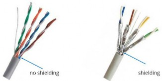
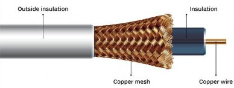
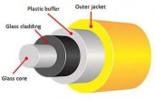
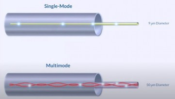
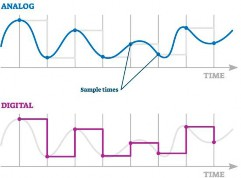
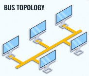
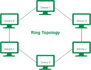
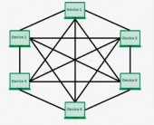
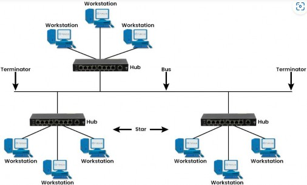
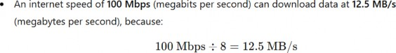

Definition of a Computer Network and Data:
A computer network is a system of interconnected devices (computers, servers, routers, switches, etc.) that are capable of sharing data, resources, and services. These devices communicate with each other using transmission media (wired or wireless) and follow communication protocols to exchange information.
The primary goals of computer networks are to facilitate:
Resource Sharing: Sharing hardware (like printers), software, and data among multiple devices.
Communication: Allowing devices to communicate through email, voice, or video calls.
Centralized Management: Managing devices and resources from a central location.
Networking is essential for modern organizations and individuals, enabling resource sharing, information exchange, communication, and data backup. By leveraging networks, businesses can increase efficiency, reduce costs, and enhance collaboration, ultimately supporting continuous growth and innovation. Computer data refers to any form of information that is processed or stored by a computer. It can be in the form of text, numbers, images, audio, video, or other types of digital information. Computers use binary code (0s and 1s) to represent and process data, allowing complex operations and tasks to be carried out.
Types of Data Communication (modes)
Based on Direction of Data Flow (Transmission Modes)
The direction of data transfer determines how devices send and receive information. There are three primary transmission modes:
(different types of transmission modes)
Simplex Communication
Description: Data flows in only one direction. The sender transmits data, and the receiver only accepts it without sending anything back.
Examples:
TV broadcasts
Radio transmissions
Advantages:
Disadvantages:
Half-Duplex Communication
Description: Data flows in both directions, but only one device can send or receive data at a time. Communication is bidirectional but not simultaneous.
Examples:
Walkie-talkies
Two-way radios
Advantages:
Disadvantages:
Full-Duplex Communication
Description: Data flows in both directions simultaneously. Both devices can send and receive data at the same time.
Examples:
Telephone conversations
Video conferencing
Advantages:
Disadvantages:

Based on Communication Type
Unicast Communication
Description: Data is sent from one sender to a specific receiver.
Examples:
Advantages:
Disadvantages:
Multicast Communication
Description: Data is sent from one sender to a group of specific receivers. It is often used for applications like video conferencing and online streaming.
Examples:
Advantages:
Disadvantages:
Broadcast Communication
Description: Data is sent from one sender to all devices within a network.
Examples:
Advantages:
Disadvantages:
Anycast Communication
Description: Data is sent from one sender to the nearest device in a specific group of receivers, typically used in IPv6 networks.
Examples:
Advantages:
Disadvantages:
Based on Connection Establishment
Connection-Oriented Communication
Description: A dedicated connection is established before data transfer begins. This ensures reliable and ordered data delivery.
Examples:
Advantages:
Disadvantages:
Connectionless Communication
Description: Data is sent without establishing a dedicated connection. There is no guarantee of data delivery or order.
Examples:
Advantages:
Disadvantages:

The communication process in networking is essential for transmitting data between devices. Depending on the direction of data flow, communication type, and connection setup, different communication processes are used to meet various networking needs. Understanding these processes helps in designing efficient, reliable, and scalable networks.
Data Transmission Media
Data Transmission Media: Data transmission media refers to the physical or wireless pathways used to send data from one device to another in a network. These media serve as carriers for transmitting signals in various forms, such as electrical pulses, light waves, or electromagnetic waves. The choice of transmission media impacts the speed, reliability, and cost of communication.
Types of Data Transmission Media: Data transmission media can be divided into two main categories:
Guided Media (Wired/Bounded Media): Physical cables that guide data along a defined path.
Unguided Media (Wireless/Unbounded Media): Wireless communication where data travels through the air, water, or space.
Aspect | Guided Media (Wired) | Unguided Media (Wireless) |
Transmission Path | Fixed physical path | No fixed path, uses air |
Installation Cost | Higher (cables, devices) | Lower (no cables required) |
Interference | Less prone to interference | Prone to environmental noise |
Security | More secure (closed path) | Less secure (open transmission) |
Mobility | Limited by cable length | Supports mobile communication |
Distance | Short to medium distances | Long distances and global reach |
Guided Media
Introduction to Guided Media
Guided media, also known as wired or bounded media, refers to physical cables that provide a fixed path for data transmission. These cables guide data signals from the sender to the receiver, ensuring high-quality, secure, and reliable communication. Guided media is commonly used in Local Area Networks (LANs), telecommunications, and cable TV networks.
Characteristics of Guided Media
Physical Path: Data travels through a defined physical pathway.
Security: More secure due to limited access.
Reliability: Less susceptible to external interference.
High Data Transfer Speed: Supports high bandwidth for fast data transfer.
Limited Mobility: Devices are restricted by cable length and placement.
Types of Guided Media: Guided media is broadly classified into three types:
Twisted Pair Cable
Coaxial Cable
Fiber Optic Cable

Twisted Pair Cable
Description: Twisted pair cable consists of two insulated copper wires twisted around each other. The twisting reduces electromagnetic interference (EMI) and crosstalk from adjacent cables.
Types of Twisted Pair Cable:
Unshielded Twisted Pair (UTP):
Description: No additional shielding, commonly used in Ethernet networks.
Applications: Telephone lines, LANs, DSL connections.
Standards: Common categories include Cat 3, Cat 5, Cat 5e, Cat 6, and Cat 7 cables.
Shielded Twisted Pair (STP):
Description: Includes a metal shield or foil to block EMI, making it more resistant to interference.
Applications: Industrial environments, high-speed data communication.

Advantages:
Low cost and easy installation.
Flexible and lightweight.
Compatible with most networking equipment.
Disadvantages:
Limited distance (up to 100 meters for standard Ethernet).
Prone to crosstalk in unshielded configurations.
Lower data transfer speed compared to fiber optic cables.

Coaxial Cable
Description: Coaxial cable consists of a central copper core surrounded by insulating material, a metal shielding layer, and a protective plastic outer cover. Its layered design provides better protection against external interference.
Structure of Coaxial Cable:
Copper Core: Carries data signals.
Dielectric Insulator: Prevents signal leakage.
Metal Shielding (Braided Mesh): Reduces EMI and signal loss.
Plastic Outer Jacket: Protects the cable from physical damage.

Applications:
Cable TV networks
Broadband internet connections
Long-distance telephone lines
Advantages:
High bandwidth for data transfer.
Better resistance to EMI compared to twisted pair cables.
Supports longer cable lengths than twisted pair cables.
Disadvantages:
Bulkier and less flexible.
More expensive than twisted pair cables.
Difficult to install and maintain.

Fiber Optic Cable
Description: Fiber optic cables transmit data as light pulses through thin strands of glass or plastic fibers. They offer the highest bandwidth and are ideal for long-distance, high-speed communication.

Structure of Fiber Optic Cable:
Core: Central glass or plastic fiber that transmits light signals.
Cladding: Reflective material surrounding the core to keep light signals inside.
Buffer Coating: Protects the core and cladding from damage.
Outer Jacket: Adds further protection from environmental factors.
Types of Fiber Optic Cables:
Single-Mode Fiber (SMF):
Multi-Mode Fiber (MMF):

Single-Mode vs. Multi-Mode optical Fiber
Aspect | Single-Mode Fiber (SMF) | Multi-Mode Fiber (MMF) |
Core Diameter | Small (8-10 microns) | Larger (50-62.5 microns) |
Light Propagation | Single light mode (one beam) | Multiple light modes (beams) |
Light Source | Laser (narrow, focused beam) | LED (broad, scattered beam) |
Distance Coverage | Long-distance (up to 100 km+) | Short to medium (up to 2 km) |
Bandwidth | Very high | Moderate to high |
Data Rate | Extremely fast | Fast but slower than SMF |
Signal Quality | Minimal signal loss & distortion | More susceptible to modal dispersion |
Applications | WAN, Internet backbone, telecom | LAN, data centers, campus networks |
Cost (Cable/Setup) | Expensive (cable & hardware) | Cheaper than SMF |
Installation Complexity | Requires precise alignment | Easier to install and maintain |
Typical Use Case | Long-distance telecom & ISPs | Local area networking (LANs) |
Applications:
Internet backbone
Long-distance telephone networks
Cable TV and streaming services
Advantages:
Extremely high bandwidth and speed.
Immune to electromagnetic interference.
Long-distance data transmission with minimal signal loss.
Highly secure due to light-based transmission.
Disadvantages:
Expensive to install and maintain.
Fragile and difficult to handle.
Requires specialized knowledge for installation and repair.
Comparison of Guided Media Types
Feature | Twisted Pair Cable | Coaxial Cable | Fiber Optic Cable |
Transmission Speed | Moderate | High | Very High |
Distance Supported | Short (100m) | Medium (500m-1km) | Long (up to 100km) |
EMI Resistance | Low (unshielded) | High | Very High |
Cost | Low | Moderate | High |
Flexibility | High | Moderate | Low (fragile) |
Applications | LAN, telephones | Cable TV, broadband | Internet backbone, ISPs |
Advantages of Guided Media
Secure Transmission: Physical cables are less prone to interception.
High Data Rates: Supports fast data transfer speeds.
Reliable: Less affected by environmental factors like weather.
Scalable: Supports large networks through structured cabling systems.
Disadvantages of Guided Media
Limited Mobility: Devices are restricted by cable length and placement.
High Installation Cost: Cables, connectors, and skilled labor can be expensive.
Physical Damage: Susceptible to wear and tear from environmental factors.
Complex Setup: Requires technical expertise for installation and maintenance.
Guided media is an essential component of modern communication networks, providing fast, reliable, and secure data transmission. Twisted pair cables are cost-effective and commonly used in LANs, while coaxial cables offer higher bandwidth for broadband services. Fiber optic cables provide the fastest and most secure data transmission over long distances. Selecting the appropriate guided media depends on the network's specific requirements, including speed, distance, budget, and environmental conditions.
Unguided Media (Wireless Media)
Introduction: Unguided media, also known as wireless media, refers to communication channels that transmit data without using physical cables or wires. Data signals travel through the air, water, or even space using electromagnetic waves. Wireless media supports mobility, long-distance communication, and global connectivity, making it essential for modern communication networks like mobile phones, Wi-Fi, and satellite systems.

Characteristics of Unguided Media
No Physical Connection: Data is transmitted through electromagnetic waves without the need for cables.
Mobility Support: Devices can communicate while in motion.
Global Reach: Signals can cover long distances, including intercontinental communication.
Ease of Installation: No cables are required, simplifying network setup.
Prone to Interference: Environmental factors like weather and physical obstacles may affect signal quality.
Less Secure: Data transmission can be intercepted due to open signal broadcast.
Types of Unguided Media: Unguided media is classified based on the type of electromagnetic waves used for data transmission. These include:
Radio Waves
Microwaves
Infrared Waves
Satellite Communication
Radio Waves
Description: Radio waves are low-frequency electromagnetic waves used for wireless communication. They can travel long distances and pass through walls, making them suitable for broadcasting and mobile communication. Frequency Range: 3 kHz to 1 GHz
Applications:
AM/FM radio broadcasting
Mobile phones
Wi-Fi and Bluetooth communication
Walkie-talkies and wireless headsets
Advantages:
Long-range communication.
Supports mobility and device portability.
Cost-effective and easy to implement.
Disadvantages:
Interference from other radio sources.
Security concerns due to open signal transmission.

Microwaves
Description: Microwaves use higher-frequency radio waves for point-to-point communication. They require a direct line of sight between the transmitting and receiving devices because they cannot penetrate obstacles like walls or mountains.
Frequency Range: 1 GHz to 300 GHz
Types:
Terrestrial Microwave: Used for ground-based point-to-point communication.
Satellite Microwave: Used for long-distance communication through satellites.
Applications:
Long-distance telephone communication
Satellite TV broadcasting
Cellular networks (mobile phones)
Military communication systems
Advantages:
High bandwidth and large data transfer rates.
Suitable for long-distance communication.
Can operate in remote areas where cabling is not feasible.
Disadvantages:
Requires clear line of sight.
Affected by weather conditions like rain and storms.
Expensive infrastructure setup (microwave towers).

Infrared Waves
Description: Infrared communication uses light waves just below the visible spectrum. It supports short-range, line-of-sight communication between devices within a confined area.
Frequency Range: 300 GHz to 400 THz
Applications:
TV remote controls
Wireless keyboards and mice
Security systems
Short-range file transfer between devices
Advantages:
No interference from radio signals.
Secure communication within confined areas.
Cost-effective for short-range communication.
Disadvantages:
Limited range (up to a few meters).
Requires unobstructed line of sight between devices.
Can be disrupted by bright light sources.

Satellite Communication
Description: Satellite communication involves transmitting data from Earth to satellites in space, which relay the signals back to receivers on Earth. Satellites are placed in geostationary orbits about 36,000 km above the Earth's surface.
Types of Satellites:
Geostationary Satellites (GEO): Fixed position relative to Earth, used for TV broadcasting and weather monitoring.
Medium Earth Orbit Satellites (MEO): Used for navigation systems like GPS.
Low Earth Orbit Satellites (LEO): Used for communication satellites like Starlink.
Applications:
GPS navigation systems
Satellite TV broadcasting
International telephone communication
Weather forecasting
Advantages:
Global coverage and long-distance communication.
Reliable in remote or hard-to-reach areas.
Disadvantages:
High installation and maintenance costs.
Signal delay due to the long distance between the Earth and satellites.
Affected by weather conditions like storms and heavy clouds.

Comparison of Unguided Media Types
Aspect | Radio Waves | Microwaves | Infrared Waves | Satellite Communication |
Frequency Range | 3 kHz - 1 GHz | 1 GHz - 300 GHz | 300 GHz - 400 THz | Variable |
Distance | Long-range (100s of km) | Medium to long- range | Short-range (few meters) | Global |
Line of Sight Needed | No (except some cases) | Yes (required) | Yes (required) | Yes (satellite to station) |
Applications | Radio, Wi-Fi, Bluetooth | Mobile phones, TV networks | Remote controls, gadgets | GPS, TV, global internet |
Advantages | Cost-effective, mobile | High bandwidth, scalable | Secure, no interference | Global reach, long- distance |
Disadvantages | Interference, security risk | Expensive, weather- sensitive | Limited range, line of sight | Expensive, weather- sensitive |
Unguided media has transformed modern communication by enabling wireless, long-distance, and mobile connectivity. Each type of wireless media has unique properties and applications, making them suitable for various use cases such as mobile telephony, satellite broadcasting, internet access, and short-range device communication. Understanding these media types helps in designing efficient and reliable communication networks tailored to specific needs.
Line of Sight (LOS) refers to the straight path or unobstructed view between a transmitter and a receiver in wireless communication. For effective transmission, the transmitter and receiver must be able to "see" each other, meaning there must be no obstacles like buildings, mountains, or other physical obstructions blocking the path of the signal.
Bandwidth and Data Transmission Speed
Introduction: Data transmission speed refers to the rate at which data is transferred from one device to another in a network. The speed is typically measured in bits per second (bps) or its multiples (kbps, Mbps, Gbps). Various factors influence data transmission speed, and understanding these factors is crucial for optimizing network performance. The two key factors affecting data transmission speed are bandwidth and distance.

What is Bandwidth?
Bandwidth refers to the maximum amount of data that can be transmitted over a communication channel or network in a given amount of time. It is often described as the "capacity" of the channel and determines how much information can be sent or received per unit of time.
Units: Bandwidth is usually measured in bits per second (bps), with higher capacities measured in
kilobits per second (kbps), megabits per second (Mbps), or gigabits per second (Gbps).
Example: A network with a bandwidth of 100 Mbps can transmit 100 million bits of data every second.
How Bandwidth Affects Data Transmission Speed
The bandwidth of a communication medium directly impacts the maximum speed at which data can be transferred. Higher bandwidth allows more data to be sent simultaneously, improving overall transmission speed.
Factors Influencing Bandwidth:
Transmission Medium: Different transmission media have different bandwidth capacities. For example,
fiber optic cables have significantly higher bandwidth than twisted pair cables.
Technology: Advances in network technologies, such as 4G, 5G, and fiber optics, have vastly improved bandwidth and, consequently, data transmission speeds.
Bandwidth and Network Speed:
High Bandwidth: A high bandwidth allows the transmission of larger amounts of data at once. For example, fiber-optic connections can offer speeds exceeding 1 Gbps due to their higher bandwidth capacity.
Low Bandwidth: A limited bandwidth reduces the amount of data transmitted per second, leading to slower speeds. For example, traditional dial-up connections had bandwidths of around 56 Kbps, leading to much slower data transfers.
Bandwidth-Delay Product
The bandwidth-delay product is a key concept when considering how bandwidth and distance interact in determining data transfer speed, particularly in long-distance networks. This product indicates the amount of
data that can be "in flight" in the network at any given time. High bandwidth networks may still experience delays if the propagation delay (the time it takes for a signal to travel through the medium) is high.
Distance and Data Transmission Speed
Impact of Distance on Data Transmission Speed
Distance plays a critical role in determining the time it takes for data to travel between devices. As the distance between the sender and the receiver increases, the time taken to transmit data also increases, affecting overall speed.
Key Concepts:
Propagation Delay: Propagation delay is the time it takes for a signal to travel from the sender to the receiver. It depends on the distance between the two devices and the speed of the signal in the
medium.
Latency: Latency refers to the overall delay in communication caused by several factors, including propagation delay and other network bottlenecks (e.g., routing, processing delays). High latency reduces the effective transmission speed, especially in long-distance communication.
The Effect of Distance on Different Media
Copper Wires: Signals degrade with distance, requiring repeaters to boost the signal for longer distances. In networks like Ethernet, distance limitations are often imposed by the type of cabling used (e.g., 100 meters for UTP).
Fiber Optic Cables: Fiber optic cables have much lower signal loss over long distances and can maintain high data rates even at hundreds of kilometers.
Wireless Networks: For radio and microwave signals, the further the distance, the more likely the signal will be affected by environmental factors (e.g., interference, weather conditions), reducing the transmission speed.
Signal Degradation Over Distance
As a signal travels, it loses strength due to:
Attenuation: The gradual loss of signal strength over distance, making the signal weaker the farther it travels.
Noise: Interference from external sources (e.g., electromagnetic interference) can corrupt the signal, requiring retransmissions or error correction.
Dispersion: In fiber optics, signal dispersion can spread out the signal, reducing its clarity over long distances.
Distance and Network Performance:
Short Distances: For networks with short distances (e.g., within a building or local area), the effect of distance on speed is minimal. In such networks, the bandwidth of the medium is the primary factor affecting speed.
Long Distances: For networks that span long distances (e.g., between cities or across countries), propagation delay and attenuation become significant. This leads to slower transmission speeds, even if the bandwidth is high.

Optimizing Data Transmission Speed
The speed at which data is transmitted depends on two major factors: bandwidth and distance.
Bandwidth determines how much data can be transmitted at once, with higher bandwidth allowing for faster data transfer.
Distance introduces delays (propagation delay) and challenges like signal degradation, which can slow down data transmission.
To achieve the optimal transmission speed, both bandwidth and distance need to be carefully considered in the design and setup of communication systems. Efficient use of high-bandwidth mediums, along with solutions like repeaters and signal compression, can help minimize the impact of distance on transmission speed.
By understanding and optimizing both bandwidth and distance, networks can achieve higher performance and better data transfer rates, ensuring fast, reliable communication.
Fundamentals of Transmission
Electromagnetic Waves
Definition: Electromagnetic (EM) waves are oscillating electric and magnetic fields that propagate through space. These waves carry energy and information across distances without the need for physical media.
Properties:
Frequency: The number of oscillations per second, typically measured in Hertz (Hz).
Wavelength: The distance between two consecutive peaks or troughs of the wave.
Speed: In a vacuum, EM waves travel at the speed of light (approximately 300,000 km/s).
Types of EM Waves:
Radio waves: Used for communication like AM/FM radio, TV, mobile phones.
Microwaves: Used for satellite communication, mobile networks, and radar.
Infrared: Used in remote controls and short-range communication.
Visible light, ultraviolet, and X-rays are also part of the spectrum but are not typically used for communication.
Signals: Analog and Digital
Analog Signals
Definition: Analog signals are continuous signals that vary smoothly over time. They can take on any value within a range.
Representation: They are typically represented as waveforms, with varying amplitude and frequency.
Examples: Sound waves, light intensity, and temperature readings.
Characteristics:
Continuous: Can represent any value.
Noise: Susceptible to distortion and degradation during transmission.
Digital Signals
Definition: Digital signals are discrete signals that have a limited set of values (often represented as binary, 0s and 1s).
Representation: They are represented by square waves or pulses.

Examples: Computer data, binary codes, and digital audio signals.
Characteristics:
Discrete: Limited to specific values (e.g., 0 and 1).
Less prone to noise: Easier to detect and reconstruct with minimal distortion.
Modulation and Demodulation
Modulation
Definition: Modulation is the process of varying a carrier wave (typically a high-frequency signal) to transmit information (e.g., sound, data).
Purpose: Helps adapt the information signal to the transmission medium (radio, fiber optics, etc.) and increase the range of transmission.
Types of Modulation:
Amplitude Modulation (AM): The amplitude of the carrier wave is varied according to the data signal.
Example: AM radio broadcasting.
Frequency Modulation (FM): The frequency of the carrier wave is varied to encode the data.
Example: FM radio broadcasting.
Phase Modulation (PM): The phase of the carrier wave is varied to encode the data.
Example: Used in digital communication systems like PSK (Phase Shift Keying).
Demodulation
Definition: Demodulation is the reverse process of modulation, where the data signal is extracted from the modulated carrier wave.
Purpose: To recover the original information signal from the transmitted modulated wave.

Multiplexing
Frequency Division Multiplexing (FDM)
Definition: FDM is a technique where multiple signals are transmitted simultaneously over a single communication channel by dividing the channel into different frequency bands.
Application: Used in traditional analog telephony and radio broadcasting.
Example: Radio stations broadcasting on different frequencies.
Wavelength Division Multiplexing (WDM)
Definition: WDM is a technique used in fiber-optic communications where multiple signals are transmitted using different wavelengths (or colors) of light.
Application: Primarily used in high-capacity fiber-optic networks to increase bandwidth.
Example: Different data streams are transmitted simultaneously on various wavelengths of light in a single fiber.

Asynchronous and Synchronous Transmission
Asynchronous Transmission
Definition: Asynchronous transmission involves sending data one byte or character at a time, with each character framed by start and stop bits to indicate the beginning and end of transmission.
Characteristics:
No need for synchronization: The sender and receiver do not need to be synchronized.
Suitable for small amounts of data or intermittent transmission.
Example: Serial communication like RS-232 or keyboard data transmission.
Synchronous Transmission
Definition: In synchronous transmission, data is sent in continuous streams, with synchronization signals used to align the sender and receiver’s clocks.
Characteristics:
Requires synchronization: The sender and receiver clocks must be synchronized.
Efficient for large amounts of data or continuous transmission.
Example: Ethernet, USB, and most high-speed network communication.
Understanding the fundamentals of transmission—such as modulation, multiplexing, and the differences between analog and digital signals—is critical for optimizing communication systems. Each technique, from modulation to synchronous transmission, plays a crucial role in ensuring efficient data transmission, especially as the demand for higher bandwidth and longer-distance communication grows.
Types of Computer Networks
Computer networks play a vital role in modern communication, business operations, and daily life. Understanding the different types of networks, their characteristics, and use cases helps in choosing the right network for specific needs. From small LANs for homes to expansive WANs for global connectivity, each type of network is designed to meet particular requirements regarding speed, distance, and functionality.
Comparison Table of Different Types of Computer Networks
Network Type | Description | Applications | Speed | Distance | Example |
LAN (Local Area Network) | Small-scale network, typically within a building. | Home/office networks, file sharing, gaming. | High (1 Gbps - 10 Gbps) | Few kilometers (100-200 meters) | Ethernet, Wi- Fi |
MAN (Metropolitan Area Network) | Network covering a city or large campus. | City-wide networks, university campuses. | Moderate to high (1 Gbps - 10 Gbps) | Up to 50 kilometers | Fiber optics, leased lines |
WAN (Wide Area Network) | Large-scale network, spans cities or countries. | Connecting remote offices, global internet. | Variable (1 Mbps - 100 Gbps) | Global (thousands of kilometers) | The Internet, leased lines |
PAN (Personal Area Network) | Small network for personal devices. | Bluetooth devices, wireless headsets, smartphones. | Low to moderate (up to 3 Mbps) | 10 meters (33 feet) | Bluetooth, ZigBee |
SAN (Storage Area Network) | High-speed network for storage systems. | Enterprise storage, data backup systems. | Very high (10 Gbps and above) | Confined to data centers | Fibre Channel, iSCSI |
VPN (Virtual Private Network) | Secure, private network over public internet. | Secure remote access, connecting to private networks. | Depends on internet connection and encryption | Global (over the internet) | Remote business access, secure browsing |
Local Area Network (LAN)
Definition of LAN
A Local Area Network (LAN) is a network that connects computers and other devices within a limited geographical area, such as a home, office, school, or campus. LANs allow devices to communicate and share
resources, such as files, printers, and internet connections. LANs can be implemented using both wired and wireless technologies.
Characteristics of LAN
Geographical Scope: LANs typically cover small areas, ranging from a single room to several kilometers within a building or campus.
Data Transfer Speed: LANs generally offer high data transfer rates, typically ranging from 100 Mbps to 10 Gbps, depending on the technology used.
Low Cost: LANs are relatively inexpensive to set up, especially with the widespread use of Ethernet cables and wireless technology.
Resource Sharing: LANs enable devices to share resources like printers, storage, and internet connections, improving efficiency and reducing costs.
Reliability: LANs are generally reliable with low latency and minimal interference, especially in wired configurations.
Security: Since LANs are typically restricted to a small area, they offer relatively better security control compared to wider networks.
Components of a LAN
Computers and Devices: The endpoints of the network, such as desktop computers, laptops, smartphones, and printers.
Network Interface Cards (NICs): Hardware that allows devices to connect to the network.
Cabling/Medium: The physical medium for data transmission, which can include copper cables (Ethernet), fiber optics, or wireless technologies (Wi-Fi).
Switches and Hubs: Devices that manage data traffic within the LAN. Switches route data between devices efficiently, while hubs broadcast data to all devices.
Router: A device that connects the LAN to external networks, like the internet.
Access Points (APs): In wireless LANs, access points allow devices to connect wirelessly to the network.

Types of LAN Connections
Wired LAN: Uses physical cables to connect devices. Ethernet is the most common technology used in wired LANs. Wired LANs are typically faster and more secure than wireless LANs but less flexible.
Ethernet (IEEE 802.3): The most widely used LAN technology that uses twisted pair cables (Cat 5e, Cat 6) or fiber optic cables for high-speed data transmission.
Wireless LAN (WLAN): Uses wireless technology (usually Wi-Fi) to connect devices. WLANs are more flexible and allow devices to connect without the need for cables.
Wi-Fi (IEEE 802.11): The standard for wireless LANs, supporting various frequencies and data speeds (e.g., 802.11ac, 802.11ax).
Hybrid LAN: A combination of wired and wireless technologies, where some devices are connected using Ethernet cables while others use Wi-Fi.
LAN Topologies
In networking, a topology refers to the physical or logical layout of a network. It defines how devices are connected, how they communicate, and how data flows through the network. LAN (Local Area Network) topologies are critical in determining the performance, scalability, and fault tolerance of the network. There are several common LAN topologies: Bus, Ring, Star, Mesh, and Tree.
Each topology has its own advantages and disadvantages, and the choice of topology depends on factors such as the number of devices, required performance, fault tolerance, ease of installation, and cost.


Bus Topology
In bus topology, all devices in the network are connected to a single central cable, called the backbone or bus. This backbone carries data signals to all connected devices. Each device listens for data on the bus and accepts it if the data is addressed to it. If not, the data continues to propagate down the bus.
How It Works:
Data is transmitted in both directions along the bus cable.
Each device on the network receives the data, but only the device with the matching address processes it.
If the data is not intended for a particular device, that device ignores it.
Advantages:
Simple and Cost-Effective: Easy to set up and doesn’t require much cable, making it inexpensive.
Minimal Cable Use: Only one central cable is required to connect all devices, reducing the physical infrastructure.
Easy to Expand: New devices can be added by simply tapping into the bus.
Disadvantages:
Single Point of Failure: If the backbone cable fails, the entire network goes down.
Performance Issues: As more devices are added, the performance degrades due to congestion on the bus, causing slower data transmission.
Difficult Troubleshooting: Detecting faults or failures can be challenging, as a problem in the cable affects the entire network.
Use Cases:
Small home networks and legacy networks.
Ring Topology
In ring topology, devices are connected in a closed loop, where each device has two neighbors—one for sending data and one for receiving. Data travels in one direction (or sometimes two directions in a dual-ring topology) around the ring until it reaches the destination device.
How It Works:
A device sends data to the next device in the ring, which then passes it along to the next, until the destination device receives it.
Token Passing: In some ring networks (such as Token Ring), a special data packet called a "token" circulates around the ring. A device can only send data if it holds the token, reducing collisions.
Advantages:
Orderly Data Transmission: Data flows in a predictable manner, and there is less risk of data collision compared to bus topology.
High-Speed Data Transfer: In networks with fewer devices, the data transfer rate can be quite high.
No Data Collisions (in Token Ring): The token-passing method ensures that only one device transmits at a time, eliminating collisions.
Disadvantages:
Single Point of Failure: A failure in any device or the connection between two devices can disrupt the entire network, requiring the ring to be physically broken to fix the issue.
Performance Degradation: As the network grows, the transmission time for data increases due to the looping nature of the data flow.
Difficult Troubleshooting: Identifying faults can be challenging as the data is passed through each device.
Use Cases:
Used in environments where high-speed data transfer is required with low levels of data collision.
Historically used in IBM's Token Ring networks.
Star Topology
In star topology, all devices are connected to a central device (usually a hub or switch). The central device acts as a mediator, forwarding data between devices within the network. The devices themselves do not
communicate directly with one another but must go through the central device.
How It Works:
When a device sends data, it is directed to the central hub or switch, which then routes it to the appropriate destination device.
Switches are typically used in modern star networks as they are more efficient than hubs at directing data only to the correct recipient.
Advantages:
Easy to Install and Manage: The central hub/switch makes configuration straightforward, and new devices can easily be added by connecting them to the central hub.
Fault Isolation: If one device fails, it does not affect the rest of the network. However, if the central device fails, the whole network is affected.
Scalable: More devices can be added without affecting the overall network performance.
High Performance: In switched networks, each device gets a dedicated connection, improving performance.
Disadvantages:
Central Point of Failure: The failure of the central hub or switch disrupts the entire network.
More Cabling Required: More physical cabling is needed compared to other topologies (e.g., bus), especially in large networks.
Cost: The central device (hub or switch) and additional cables add to the cost.
Use Cases:
Modern Ethernet networks.
Wi-Fi networks, where access points act as the central hub for connecting devices wirelessly.
Mesh Topology
In mesh topology, each device in the network is connected to every other device in the network. This creates a fully redundant network where multiple paths exist for data to travel.
How It Works:
Every device communicates with every other device directly.
Full Mesh: Every device is connected to every other device.
Partial Mesh: Some devices are connected to every other device, while others are only connected to a subset.

Advantages:
High Reliability and Fault Tolerance: If one connection fails, data can still reach its destination through an alternate path.
No Data Traffic Bottleneck: With multiple communication paths, there is no congestion or single point of failure.
Scalability: Mesh topologies can handle high traffic volumes and support many devices without significant performance degradation.
Disadvantages:
Expensive: Requires a lot of cabling and network interfaces, making it expensive to set up and maintain.
Complex to Manage: With many connections, the complexity of managing the network increases.
Requires More Hardware: Each device needs multiple network interfaces to connect to other devices.
Use Cases:
High-performance networks where uptime is critical, such as in data centers, government communications, and large enterprises.
Used in systems like military networks and Internet backbones.
Tree Topology
Tree topology is a hybrid topology that combines aspects of bus and star topologies. It has a hierarchical structure, with a central root device (like a hub or switch) and branches that connect various devices or groups of devices.
How It Works:
The tree topology has a central root node connected to secondary nodes (sub-branches) which, in turn, connect to other devices.
Data flows through the hierarchy from the leaf nodes to the root and vice versa.
Advantages:
Scalable: Can easily be expanded by adding new branches to the tree.
Fault Isolation: A failure in one branch of the tree only affects that segment of the network, not the entire network.
Hierarchical Structure: Easy to manage and maintain due to the logical structure.
Disadvantages:
Complex Setup: Requires more planning and configuration than simpler topologies.
Dependency on Root Device: If the root node fails, the entire network can be disrupted.
Cost: Requires more cabling and hardware compared to simpler topologies.
Use Cases:
Large enterprise networks that require hierarchical organization.
Used in large campus networks and internet service provider (ISP) networks.

Comparison of LAN Topologies
Topology | Description | Advantages | Disadvantages |
Bus | Single cable connects all devices. | Simple, cost-effective, minimal cabling. | Single point of failure, performance degrades with more devices. |
Ring | Devices connected in a circular manner. | Orderly data flow, efficient with few devices. | Single point of failure, slower performance as devices increase. |
Star | Devices connected to a central hub/switch. | Easy to install, scalable, fault isolation. | Central device failure disrupts the network, more cabling needed. |
Mesh | Every device connected to every other device. | High reliability, multiple paths for data. | Expensive, complex to set up and maintain. |
Tree | Hierarchical structure of nodes and devices. | Scalable, fault isolation, easy to manage. | Complex setup, dependency on root device, higher cost. |
Communication Protocol
A communication protocol is a set of rules, procedures, or standards that define how data is transmitted and received between devices in a network. These protocols ensure that devices can understand each other, even if they are from different manufacturers or use different technologies. Communication protocols govern the format, timing, and error handling of messages exchanged across a network, allowing for accurate, efficient, and reliable communication.
Types of Communication Protocols
Communication protocols can be categorized based on their scope, functionality, and layer of operation in the OSI (Open Systems Interconnection) model. Some key types of protocols include:

Protocols Based on Communication Type
Connection-Oriented Protocols
These protocols establish a connection between the sender and receiver before any data transfer
begins. They ensure that the communication channel is reliable and that data is delivered in the correct order.
Example: Transmission Control Protocol (TCP), used in HTTP, FTP, and email services.
Characteristics:
Guarantees data delivery.
Ensures data arrives in the correct order.
Provides error-checking and retransmission in case of failure.
Connectionless Protocols
These protocols do not require a dedicated connection before sending data. They are faster but less reliable because they do not ensure that all data packets arrive or that they arrive in order.
Example: User Datagram Protocol (UDP), used for streaming video/audio and online gaming.
Characteristics:
No connection setup is required.
Faster, but without guaranteed delivery or order.
Less overhead compared to connection-oriented protocols.
Protocols Based on Layer in the OSI Model (Open Systems Interconnection Model)
The OSI model defines seven layers, from the physical transmission of data to the application level. Communication protocols operate at different layers, performing specific functions like error handling, data encapsulation, or establishing connections.
Physical Layer Protocols These protocols handle the actual transmission of raw bits over the communication medium.
Example: IEEE 802.11 (Wi-Fi), Ethernet.
Data Link Layer Protocols Protocols in this layer control access to the physical transmission medium, frame data, and ensure error-free transmission.
Example: Ethernet, PPP (Point-to-Point Protocol), HDLC (High-Level Data Link Control).
Network Layer Protocols These protocols handle routing, addressing, and the forwarding of packets between devices on different networks.
Example: Internet Protocol (IP), ICMP (Internet Control Message Protocol).
Transport Layer Protocols The transport layer is responsible for ensuring that data is transferred reliably and in the correct order between the source and destination devices.
Example: TCP (provides reliable communication), UDP (provides faster but less reliable communication).
Session Layer Protocols The session layer manages and controls the dialog between two devices, ensuring that data is properly synchronized during communication.
Example: NetBIOS, RPC (Remote Procedure Call).
Presentation Layer Protocols This layer formats data for the application layer and ensures that data is presented in a readable form. It may also handle encryption and compression.
Example: SSL/TLS (for secure data transmission), JPEG (for image compression).
Application Layer Protocols The application layer interacts with the end-user applications, ensuring that data is properly formatted and interpreted by the software.
Example: HTTP (for web browsing), FTP (for file transfer), SMTP (for email).
Commonly Used Network Devices
Network devices are the hardware components that enable the operation of computer networks. They help manage the flow of data, ensure connectivity between different devices, and enhance the efficiency and security of the network. Below are some of the most commonly used network devices and their roles in network communication:
Network Device | Function | Advantages | Disadvantages | Examples |
Router | A router forwards data between different networks (such as from a Local Area Network (LAN) to a Wide Area Network (WAN)). It helps direct packets to their correct destination using IP addresses. | Directs data between multiple networks (LAN/WAN) Uses routing tables to optimize data paths Supports advanced functions like NAT
(Network Address Translation) | overloaded | Home routers (e.g., TP-Link, Linksys), Enterprise routers (e.g., Cisco, Juniper) |
Switch | A switch connects devices within a LAN, forwarding data based on MAC addresses. It allows efficient communication between devices in the same network. | Efficient data forwarding without broadcasting to all devices Reduces network traffic by learning MAC addresses and forwarding only relevant data Scalability: easy to
expand a network | networks (LANs) | Ethernet switches (e.g., Cisco, Netgear), Managed switches (e.g., HP, Cisco) |
Hub | A hub is a basic network device that connects devices in a LAN and broadcasts data to all connected devices. It functions as a repeater, transmitting signals without filtering or addressing them. | | Introduces significant network congestion with increased traffic Cannot isolate network segments Inefficient due to data collisions
| Older networks, Small home networks, Basic office networks |
Modem | A modem (modulator- demodulator) converts digital data from a computer into analog signals for transmission over telephone lines and vice versa. It is typically used to connect to the internet. | Converts analog signals to digital signals for internet access Widely available for broadband connections Simple to use with plug-and-play functionality
| firmware updates | DSL modems (e.g., NETGEAR, Motorola), Cable modems (e.g., Arris), Fiber modems |
Access Point (AP) | An access point enables wireless devices to connect to a wired network via Wi-Fi. It acts as a bridge between the wired network and wireless devices. | Provides wireless access to networks Scalable for large networks with multiple APs Flexible, allowing devices to connect from different locations
| from other Wi-Fi networks or devices can reduce performance | Wi-Fi routers, Enterprise- grade access points (e.g., Cisco, Ubiquiti, Aruba) |
Bridge | A bridge connects two or more network segments to create a larger network. It filters traffic by checking MAC addresses to ensure that data is forwarded to the correct segment. | | compared to more modern devices like switches | Connecting two LANs in a building, Legacy networks |
Firewall | A firewall monitors and filters incoming and outgoing network traffic to ensure it adheres to security policies. It can be hardware-based or software-based. | Enhances network security by blocking unauthorized access Can inspect data traffic for potential threats (intrusion detection) Flexible in setting rules for different types of
traffic | optimal security | Hardware firewalls (e.g., Fortinet, Cisco ASA), Software firewalls (e.g., Windows Firewall) |
Gateway | A gateway connects different types of networks, often using different communication protocols, and facilitates protocol conversion. It serves as an entry/exit point for a network. | between systems using incompatible protocols | translation | Internet gateways (for connecting to the web), Email gateways, VoIP gateways |
NIC (Network Interface Card) | A NIC is a hardware component that enables a device to connect to a network. It can be wired (Ethernet) or wireless (Wi-Fi) and provides the physical interface for data transmission. | Essential for network communication Supports both wired and wireless connectivity Provides a unique MAC address for each device for network
identification | network speed based on the type of NIC (e.g., older Wi-Fi cards may have lower speeds) | Ethernet NICs, Wi-Fi NICs (integrated into laptops, desktop computers) |
Modem and its working
A modem (short for modulator-demodulator) is a networking device that allows digital data from a computer or router to be transmitted over analog communication lines, such as telephone lines, coaxial cables, or fiber optic connections. A modem performs two main functions: modulation and demodulation.
Modulation refers to the process of converting digital signals (from a computer or router) into analog signals that can be transmitted over long distances using telephone lines or cable systems.
Demodulation refers to converting the incoming analog signals back into digital signals so the computer or router can process them.
The modem plays a crucial role in facilitating internet connectivity by translating the data from the digital form used by computers to the analog form required for transmission via communication lines.
Types of and comparison of Modems
Modem Type | Definition | Speed | Advantages | Limitations |
Dial-up Modem | Connects to the internet via a telephone line; used in the 1990s & 2000s. | Up to 56 Kbps | Inexpensive, widely available in rural areas. | Slow speeds, phone line must be disconnected for internet use. |
DSL Modem | Uses telephone lines for digital data without interfering with voice calls. | 256 Kbps to 100 Mbps | Simultaneous voice and internet use. | Speed depends on distance from central office. |
Cable Modem | Uses coaxial cables for high- speed internet. | 10 Mbps to 1 Gbps | Faster than DSL, widely available where cable TV is present. | Shared bandwidth may reduce performance in high- traffic areas. |
Fiber Optic Modem | Uses fiber optic cables, offering high-speed internet. | Up to 10 Gbps | Very high speeds, low latency, reliable. | Requires fiber optic infrastructure, not always available. |
Mobile Hotspot Modem | Portable modem using cellular networks for on-the- go internet. | 2 Mbps to 100 Mbps | Mobility and convenience for temporary internet access. | Dependent on mobile network coverage and data plans. |

Working of a Modem
The modem operates by performing the following key functions:
Modulation (Digital-to-Analog Conversion)
When a computer or router sends data to the modem, it sends digital signals, which are composed of binary data (0s and 1s). These digital signals are not suitable for transmission over long distances over traditional communication lines (such as telephone or coaxial cables), which require analog signals.
The modulator in the modem converts the digital signals into analog signals, often using techniques such as Amplitude Modulation (AM) or Frequency Modulation (FM).
The analog signal can then travel through telephone lines, cable systems, or fiber optic networks.
Transmission of Analog Signals
Once the data is converted into analog signals, the modem transmits them over the chosen transmission medium (telephone lines, coaxial cables, or fiber).
The modem sends the analog signal to the telephone or cable network, where it travels toward the ISP's (Internet Service Provider) infrastructure.
Demodulation (Analog-to-Digital Conversion)
When the analog signals arrive at the ISP's infrastructure, the demodulator in the ISP's equipment converts the analog signal back into digital data.
This digital data is then sent to the server or the appropriate destination on the internet.
Similarly, when data from the internet is received, the process is reversed:
The ISP sends the digital data to the modem.
The demodulator in the modem converts the digital data into analog signals.
The modem transmits the analog signal over the line to the computer or router, where it is converted back into digital form for processing.
Error Correction
Modem and Its Role in Internet Connectivity
Internet Access via Modem
Dial-up Internet: For older technologies like dial-up, the modem provides a connection between a computer and an ISP, allowing users to access the internet via a telephone line. However, dial-up is now obsolete due to its slow speeds.
Broadband Internet: For modern broadband connections (DSL, cable, fiber), the modem connects the user's device to the ISP, ensuring high-speed internet access. DSL, cable, and fiber modems have a significant advantage in speed and reliability over dial-up.
Modem vs. Router
A modem is responsible for connecting to the internet by converting data between analog and digital formats.
A router is a separate device that connects the modem to multiple devices (computers, smartphones, etc.) in a network, either through Ethernet cables or Wi-Fi.
In many home setups, a modem-router combo device is used to streamline the connection, providing both internet connectivity and network distribution in a single device.

Router vs. Modem: Key Differences
Aspect | Router | Modem |
Function | Routes data between different networks (e.g., LAN to WAN) | Converts digital signals to analog and vice versa for internet connection |
Role | Ensures devices on a network can communicate with each other and external networks (like the internet) | Provides internet connectivity by translating signals |
Layer | Operates at the Network Layer (Layer 3) in the OSI model | Operates at the Physical Layer (Layer 1) and Data Link Layer (Layer 2) in the OSI model |
Connectivity | Can connect multiple devices through wired (Ethernet) or wireless (Wi-Fi) connections | Connects a single device to the internet unless used with a router |
Example | Home or office routers, enterprise routers | DSL modems, cable modems, fiber modems |
Wireless Networking
Wireless networking refers to the method of connecting devices to a network using radio waves or infrared signals, rather than physical cables. Wireless networks offer mobility, flexibility, and ease of installation, making them ideal for many modern applications, from personal devices to large-scale enterprise systems. Wireless communication has revolutionized how we access and share data, especially in mobile and dynamic environments.
Wireless networking technologies operate on different frequency bands and are governed by various standards, each suited for specific applications.
Comparison of Wireless Networking Types
Network Type | Range | Typical Applications | Key Technology | Advantages | Disadvantages |
WPAN | 1 to 100 meters | Personal devices like smartphones, headsets, wearables | Bluetooth, IR | Low power consumption, easy to set up, affordable | Limited range, prone to interference, lower speeds |
WLAN | 30 meters to 100 meters (indoors) | Internet access, file sharing, public Wi-Fi hotspots | Wi-Fi (802.11), Wi- Fi Direct | High-speed data transfer, flexible, scalable, cost- effective | Limited range, security risks, interference from other devices |
WMAN | Up to 50 km | City-wide internet access, VoIP, video streaming | WiMAX, LTE | Wide coverage area, mobile support, high- speed broadband | Costly infrastructure, limited availability |
WWAN | Global | Mobile internet, remote access, satellite communication | Cellular (3G/4G/5G), Satellite | Global connectivity, high mobility, broadband internet | High cost, higher latency, bandwidth limitations |
Bluetooth technology: Bluetooth technology is a wireless communication standard that enables short-range data transfer between devices using radio waves, typically operating within a 2.4 GHz frequency range. Developed in the 1990s, Bluetooth allows devices like smartphones, laptops, headphones, and wearables to connect without physical cables, offering a range of up to 100 meters, depending on the version. It uses low power consumption, making it ideal for battery-powered devices. Bluetooth has evolved over the years, with versions like Bluetooth 4.0 and 5.0 offering faster speeds, extended range, and greater energy efficiency. Bluetooth is widely used in consumer electronics for functions like audio streaming, file sharing, and hands-free calling, as well as in IoT devices, smart homes, and healthcare equipment. With built-in security features like encryption and device authentication, Bluetooth ensures secure communication. Its simplicity, low cost, and interoperability make Bluetooth a ubiquitous technology across a range of applications.
IoT (Internet of Things) refers to a network of interconnected physical devices, sensors, appliances, and systems that communicate and exchange data over the internet. These devices collect, send, and receive data, enabling remote monitoring, control, and automation of various tasks.
Smart Homes: Devices like smart lights, security cameras, and smart plugs.
Healthcare: Wearable devices that monitor vital signs.
Industrial IoT (IIoT): Sensors in factories that optimize production.
Agriculture: Smart irrigation systems that adjust based on weather data.
Common Data Communication Terms
Bandwidth: Maximum data transfer rate of a network.
Latency: Delay in data transfer.
Protocol: Set of rules for data communication.
IP Address: Unique identifier for a device on a network.
MAC Address: Hardware address for network interfaces.
Packet: Unit of data sent over a network.
Router: Directs data between networks.
Switch: Connects devices in a network and manages data traffic.
Firewall: Security system that monitors and controls incoming/outgoing traffic.
DNS (Domain Name System): Translates domain names into IP addresses.
Throughput: Actual data transfer rate.
Bit Rate: Number of bits transmitted per second.
Download/Upload Speed: Data transfer speed from/to the internet.
Ping: Test to measure network response time.
Topology: Layout or structure of a network.
Full-Duplex: Data transfer in both directions simultaneously.
Half-Duplex: Data transfer in both directions, one at a time.
Simplex: Data transfer in one direction only.
Encryption: Securing data by encoding it.
Decryption: Decoding encrypted data.
VPN (Virtual Private Network): Secure connection over a public network.
Subnet: Smaller network within a larger one.
Gateway Address: Device IP that routes traffic out of a network.
LAN (Local Area Network): Network within a limited area.
WAN (Wide Area Network): Network spanning large areas.
MAN (Metropolitan Area Network): Network covering a city or large area.
ISP (Internet Service Provider): Company providing internet access.
NIC (Network Interface Card): Hardware enabling device network access.
Media Converter: Converts one network media type to another.
Load Balancer: Distributes network traffic for efficiency.
Proxy Server: Intermediary between client and server.
VoIP Adapter: Enables phone calls over the internet.
Network Storage (NAS): Centralized data storage for network access.
Powerline Adapter: Extends network via electrical wiring.
Patch Panel: Organizes and connects network cables.
Transceiver: Combines transmitter and receiver functions.
Multiplexer (MUX): Combines multiple signals into one.
Demultiplexer (DEMUX): Splits one signal into multiple.
Bridge: Connects two different networks.
Gateway: Connects different network architectures or protocols.
Hub: Basic device connecting multiple network devices, broadcasting data to all.
Access Point (AP): Extends wireless network coverage.
Repeater: Amplifies signals to extend network range.
Gateway Address: Device IP that routes traffic out of a network.
DHCP (Dynamic Host Configuration Protocol): Assigns IP addresses automatically.
NAT (Network Address Translation): Translates private IPs to public IPs for internet access.
SSL (Secure Sockets Layer): Secures online communication through encryption.
FTP (File Transfer Protocol): Transfers files between computers over a network.
HTTP (Hypertext Transfer Protocol): Protocol for accessing web pages.
HTTPS (HTTP Secure): Secure version of HTTP using encryption.
POP3 (Post Office Protocol): Retrieves emails from a mail server.
IMAP (Internet Message Access Protocol): Manages and retrieves emails from a mail server.
SMTP (Simple Mail Transfer Protocol): Sends emails from clients to mail servers.
TCP (Transmission Control Protocol): Ensures reliable data transfer between devices.
UDP (User Datagram Protocol): Enables fast, connectionless data transfer.
IP (Internet Protocol): Routes data packets across networks.
ARP (Address Resolution Protocol): Maps IP addresses to MAC addresses.
ICMP (Internet Control Message Protocol): Sends error messages and operational information.
TFTP (Trivial File Transfer Protocol): Transfers files without authentication.
SFTP (Secure File Transfer Protocol): Transfers files securely using encryption.
SSH (Secure Shell): Provides secure remote command-line access.
Telnet: Provides remote access without encryption.
BGP (Border Gateway Protocol): Manages routing between large networks on the internet.
OSPF (Open Shortest Path First): Finds the best routing path in a network.
RIP (Routing Information Protocol): Shares routing information between devices.
VLAN (Virtual LAN): Separates network segments virtually.
QoS (Quality of Service): Manages network traffic priority for better performance.
Load Sharing: Distributes network traffic across multiple devices or links.
Multicast: Sends data to multiple devices simultaneously.
Unicast: Sends data to a single device.
Broadcast: Sends data to all devices on a network.
Anycast: Sends data to the nearest available device in a group.
DMZ (Demilitarized Zone): Isolated network area exposed to the internet for security.
Proxy ARP: Responds to ARP requests on behalf of another device.
Port Forwarding: Redirects traffic from one port to another.
MAC Filtering: Restricts network access based on device MAC addresses.
Stateful Inspection: Monitors active connections to improve firewall security.
Packet Filtering: Examines data packets to allow or block traffic.
IDS (Intrusion Detection System): Detects potential network intrusions.
IPS (Intrusion Prevention System): Detects and blocks potential intrusions.
IPsec (Internet Protocol Security): Secures IP communications through encryption.
RADIUS (Remote Authentication Dial-In User Service): Provides centralized authentication for network access.
Kerberos: Authentication protocol for secure network access.
Certificate Authority (CA): Issues digital certificates for secure communication.
Digital Signature: Provides data authenticity and integrity.
Token Ring: A network topology where devices pass a token to transmit data.
Mesh Topology: Devices interconnect directly for redundancy and reliability.
Star Topology: Devices connect to a central hub or switch.
Ring Topology: Devices form a closed loop for data transmission.
Bus Topology: Devices share a common communication line.
Backbone: Main line connecting different parts of a network.
Ethernet: Common wired network technology.
Wi-Fi: Wireless network technology for internet access.
Bluetooth: Short-range wireless communication technology.
Zigbee: Wireless communication for IoT devices.
RFID (Radio-Frequency Identification): Wireless technology for tracking and identification.
NFC (Near Field Communication): Enables close-range data exchange.
Mobile Hotspot: Device sharing its internet connection wirelessly.
Network Scanner: Tool for detecting devices and vulnerabilities in a network.
VPN Tunnel: Encrypted link between networks for secure data transfer.
Bits and Bytes:
The terms bits and bytes are used to measure data transfer speeds, but they are not the same. Here’s the difference:
Bits (b)
Definition: The smallest unit of digital data.
Use Case: Network speeds, such as internet bandwidth, are typically measured in bits per second (bps).
Examples: Mbps (Megabits per second), Gbps (Gigabits per second).
Bytes (B)
Definition: A byte consists of 8 bits.
Use Case: File sizes and storage capacities are measured in bytes.
Examples: MB (Megabytes), GB (Gigabytes).
Comparison Example:

Bits (b) = Speed of data transmission.
Bytes (B) = Size of files or storage.